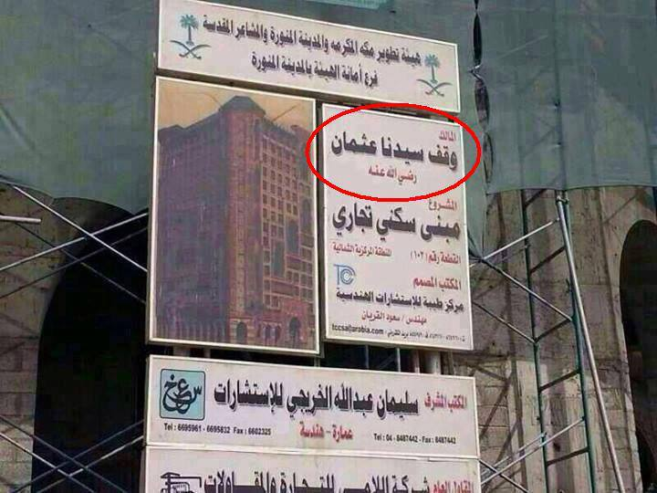

Rekening dan Hotel Atas Nama Khalifah Utsman bin Affan
WAQAF SHADAQAH JARIYAH MILIK UTSMAN BIN AFFAN DI MADINAH
Waqaf ini berupa bangunan hotel yang disewakan..
Apakah Anda tahu kalau sahabat nabi khalifah Utsman bin Affan adalah seorang pebisnis yang kaya raya, namun mempunyai sifat murah hati dan dermawan. Dan ternyata beliau radhiallahu ‘anhu sampai saat ini memiliki rekening di salah satu bank di Saudi, bahkan rekening dan tagihan listriknya juga masih atas nama beliau.
Bagaimana ceritanya sehingga beliau memiliki hotel atas namanya di dekat Masjid Nabawi..??
Diriwayatkan di masa Nabi
Shallallahu ‘alaihi wa sallam, kota Madinah pernah mengalami panceklik hingga kesulitan air bersih. Karena mereka (kaum muhajirin) sudah terbiasa minum dari air zamzam di
Mekah. Satu-satunya sumber air yang tersisa adalah sebuah sumur milik seorang Yahudi, SUMUR RAUMAH namanya. Rasanya pun mirip dengan
sumur zam-zam. Kaum muslimin dan penduduk Madinah terpaksa harus rela antri dan membeli air bersih dari Yahudi tersebut.
Prihatin atas kondisi umatnya, Rasulullah Shallallahu ‘alaihi wa sallam kemudian bersabda : “Wahai Sahabatku, siapa saja diantara kalian yang menyumbangkan hartanya untuk dapat membebaskan sumur itu, lalu menyumbangkannya untuk umat, maka akan mendapat surgaNya Allah Ta’ala” (HR. Muslim).
Adalah Utsman bin Affan Radhiyallahu ‘anhu yang kemudian segera bergerak untuk membebaskan sumur Raumah itu. Utsman segera mendatangi Yahudi pemilik sumur dan menawar untuk membeli sumur Raumah dengan harga yang tinggi. Walau sudah diberi penawaran yang tertinggi sekalipun Yahudi pemilik sumur tetap menolak menjualnya, “Seandainya sumur ini saya jual kepadamu wahai Utsman, maka aku tidak memiliki penghasilan yang bisa aku peroleh setiap hari” demikian Yahudi tersebut menjelaskan alasan penolakannya.
Utsman bin Affan Radhiyallahu ‘anhu yang ingin sekali mendapatkan balasan pahala berupa Surga Allah Ta’ala, tidak kehilangan cara mengatasi penolakan Yahudi ini.
“Bagaimana kalau aku beli setengahnya saja dari sumurmu” Utsman, melancarkan jurus negosiasinya.
“Maksudmu?” tanya Yahudi keheranan.
“Begini, jika engkau setuju maka kita akan memiliki sumur ini bergantian. Satu hari sumur ini milikku, esoknya kembali menjadi milikmu kemudian lusa menjadi milikku lagi demikian selanjutnya berganti satu-satu hari. Bagaimana?” jelas Utsman.
Yahudi itupun berfikir cepat,”… saya mendapatkan uang besar dari Utsman tanpa harus kehilangan sumur milikku”. Akhirnya si Yahudi setuju menerima tawaran Utsman tadi dan disepakati pula hari ini sumur Raumah adalah milik Utsman bin Affan Radhiyallahu ‘anhu.
Utsman pun segera mengumumkan kepada penduduk Madinah yang mau mengambil air di sumur Raumah, silahkan mengambil air untuk kebutuhan mereka GRATIS karena hari ini sumur Raumah adalah miliknya. Seraya ia mengingatkan agar penduduk Madinah mengambil air dalam jumlah yang cukup untuk 2 hari, karena esok hari sumur itu bukan lagi milik Utsman.
Keesokan hari Yahudi mendapati sumur miliknya sepi pembeli, karena penduduk Madinah masih memiliki persedian air di rumah. Yahudi itupun mendatangi Utsman dan berkata “Wahai Utsman belilah setengah lagi sumurku ini dengan harga sama seperti engkau membeli setengahnya kemarin”. Utsman setuju, lalu dibelinya seharga 20.000 dirham, maka sumur Raumahpun menjadi milik Utsman secara penuh.
Kemudian Utsman bin Affan Radhiyallahu ‘anhu mewakafkan sumur Raumah, sejak itu sumur Raumah dapat dimanfaatkan oleh siapa saja, termasuk Yahudi pemilik lamanya.
Setelah sumur itu diwakafkan untuk kaum muslimin… dan setelah beberapa waktu kemudian, tumbuhlah di sekitar sumur itu beberapa pohon kurma dan terus bertambah. Lalu Daulah Utsmaniyah memeliharanya hingga semakin berkembang, lalu disusul juga dipelihara oleh Pemerintah Saudi, hingga berjumlah 1550 pohon.
Selanjutnya pemerintah, dalam hal ini Departemen Pertanian Saudi menjual hasil kebun kurma ini ke pasar-pasar, setengah dari keuntungan itu disalurkan untuk anak-anak yatim dan fakir miskin, sedang setengahnya ditabung dan disimpan dalam bentuk rekening khusus milik beliau di salah satu bank atas nama Utsman bin Affan, di bawah pengawasan Departeman Pertanian.

Begitulah seterusnya, hingga uang yang ada di bank itu cukup untuk membeli sebidang tanah dan membangun hotel yang cukup besar di salah satu tempat yang strategis dekat Masjid Nabawi.
Bangunan hotel itu sudah pada tahap penyelesaian dan akan disewakan sebagai hotel bintang 5. Diperkirakan omsetnya sekitar RS 50 juta per tahun. Setengahnya untuk anak2 yatim dan fakir miskin, dan setengahnya lagi tetap disimpan dan ditabung di bank atas nama Utsman bin Affan radhiyallahu anhu.
Subhanallah,… Ternyata berdagang dengan Allah selalu menguntungkan dan tidak akan merugi..
Ini adalah salah satu bentuk sadakah jariyah, yang pahalanya selalu mengalir, walaupun orangnya sudah lama meninggal..
Disebutkan di dalam hadits shahih dari Abi Hurairah Radhiyallahu ‘anhu bahwasanya Nabi Shallallahu ‘alaihi wa sallam bersabda:
إِذَا مَاتَ الإِنْسَانُ انْقَطَعَ عَنْهُ عَمَلُهُ إِلاَّ مِنْ ثَلاَثَةٍ إِلاَّ مِنْ صَدَقَةٍ جَارِيَةٍ أَوْ عِلْمٍ يُنْتَفَعُ بِهِ أَوْ وَلَدٍ صَالِحٍ يَدْعُو لَهُ
“Apabila manusia meninggal dunia, terputuslah segala amalannya, kecuali dari tiga perkara: shadaqah jariyah, ilmu yang bermanfaat atau anak shaleh yang mendoakannya”. [HR. Muslim, Abu Dawud dan Nasa’i]
Dan disebutkan pada hadits yang lain riwayat Ibnu Majah dan Baihaqi dari Abi Hurairah Radhiyallahu ‘anhu, dia berkata : Rasulullah Shallallahu ‘alaihi wa sallam bersabda.
إِنَّ مِمَّا يَلْحَقُ الْمُؤْمِنَ مِنْ عَمَلِهِ وَحَسَنَاتِهِ بَعْدَ مَوْتِهِ عِلْمًا عَلَّمَهُ وَنَشَرَهُ وَوَلَدًا صَالِحًا تَرَكَهُ وَمُصْحَفًا وَرَّثَهُ أَوْ مَسْجِدًا بَنَاهُ أَوْ بَيْتًا لاِبْنِ السَّبِيلِ بَنَاهُ أَوْ نَهْرًا أَجْرَاهُ أَوْ صَدَقَةً أَخْرَجَهَا مِنْ مَالِهِ فِي صِحَّتِهِ وَحَيَاتِهِ يَلْحَقُهُ مِنْ بَعْدِ مَوْتِهِ
“Sesungguhnya di antara amalan dan kebaikan seorang mukmin yang akan menemuinya setelah kematiannya adalah: ilmu yang diajarkan dan disebarkannya, anak shalih yang ditinggalkannya, mush-haf yang diwariskannya, masjid yang dibangunnya, rumah untuk ibnu sabil yang dibangunnya, sungai (air) yang dialirkannya untuk umum, atau shadaqah yang dikeluarkannya dari hartanya diwaktu sehat dan semasa hidupnya, semua ini akan menemuinya setelah dia meninggal dunia”.
Like dan sebarkan, agar manfaat dari informasi ini tidak hanya berhenti pada anda, tapi juga bisa dirasakan oleh orang lain, sekaligus merangkai jaring pahala
Oleh : Ustadz Shalahuddin AR Daeng Nya’la